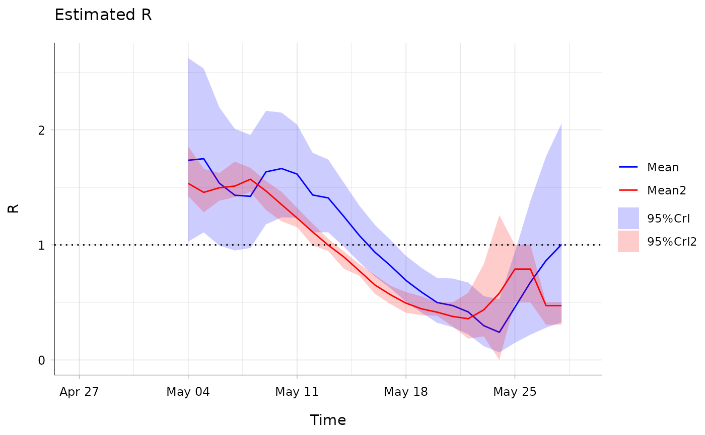
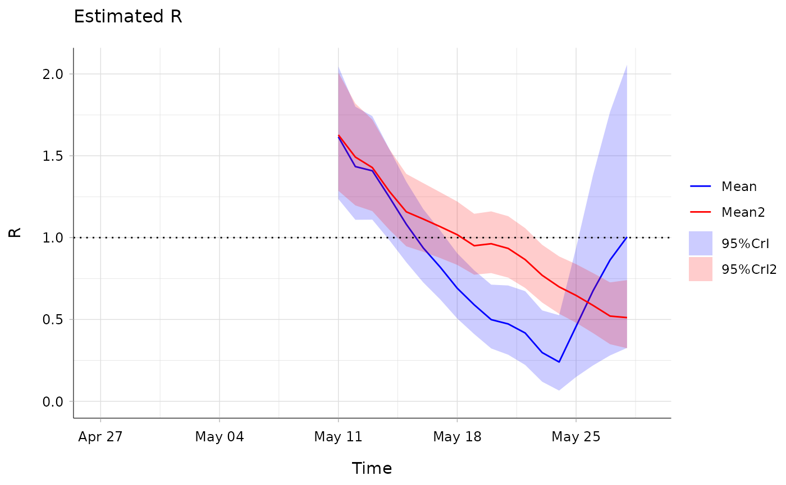

This wrapper has been created so that several estimate_R objects can
be plotted at the same time.
estimate_R_plots(..., legend = FALSE)
| ... | Arguments of
|
|---|---|
| legend | A boolean (TRUE by default) governing the presence / absence of legends on the plots |
a plot (if what = "incid", "R", or "SI") or a
grob object (if what = "all").
Anne Cori, Zhian Kamvar
## load data on pandemic flu in a school in 2009 data("Flu2009") #### COMPARE THE INSTANTANEOUS AND CASE REPRODUCTION NUMBERS #### ## estimate the instantaneous reproduction number ## (method "non_parametric_si") R_instantaneous <- estimate_R(Flu2009$incidence, method = "non_parametric_si", config = list(t_start = seq(2, 26), t_end = seq(8, 32), si_distr = Flu2009$si_distr ) ) ## estimate the case reproduction number R_case <- wallinga_teunis(Flu2009$incidence, method = "non_parametric_si", config = list(t_start = seq(2, 26), t_end = seq(8, 32), si_distr = Flu2009$si_distr ) )#> Warning: setting config$n_sim to 10 as config$n_sim was not specified.## visualise R estimates on the same plot estimate_R_plots(list(R_instantaneous, R_case), what = "R", options_R = list(col = c("blue", "red")), legend = TRUE)#### COMPARE THE INSTANTANEOUS R ON SLIDING WEEKLY OR BIWEEKLY WINDOWS #### R_weekly <- estimate_R(Flu2009$incidence, method = "non_parametric_si", config = list(t_start = seq(9, 26), t_end = seq(15, 32), si_distr = Flu2009$si_distr ) ) R_biweekly <- estimate_R(Flu2009$incidence, method = "non_parametric_si", config = list(t_start = seq(2, 19), t_end = seq(15, 32), si_distr = Flu2009$si_distr ) ) ## visualise R estimates on the same plot estimate_R_plots(list(R_weekly, R_biweekly), what = "R", options_R = list(col = c("blue", "red")), legend = TRUE)